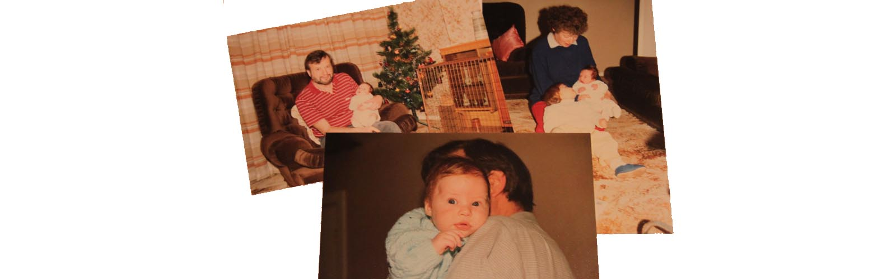
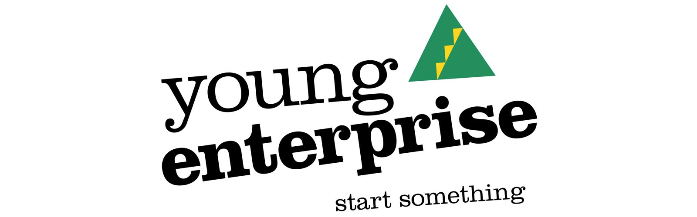

My Achievements
-

I was born 10/11/1987 to loving parents Sheila and Trevor Box.
-
I successfully completed my GCSE's and qualified for 6th form. My results included the following Maths A, English B, Design and Technology (Graphics) B, ICT C, Business Studies C, Science double award C/C, French C.
-

I volunteered to take part in Young Enterprise to get my first taste in business. As part of a team of 11 we came up with the concept of personalising seat belt covers. We went on to win many awards including best company, outstanding product award, boots innovation award and best company report award. We then went forward to the next stage and achieved 1st place in the Black Country finals progressing to the West Midlands finals where our journey came to an end.
This successful journey into the world of business opened my eyes up to the excitement of running a company. I'd encourage anyone interested in business at that age to take part.
-
I completed my sports leadership award which helped me qualify to work at my local sports centre. The process involved leading, teaching and motivating children to participate in sporting activities and games. Following the achievement of the award I worked at the sports centre during the holiday period.
-
Completing my A-Levels was one of my toughest challenges as I set myself the goal of getting in to University, unfortunately my father passed away during this period which made the task much more difficult. Thankfully I managed to focus and get the results I needed to further my education.
-
I thoroughly enjoyed my time at the University of Chester, it not only helped with my education it also helped develop my maturity and levels of responsibility. I graduated with a 2:2, however I felt I could've done a lot better.
The degree covered a wide range of subjects from finance, marketing and people management. I gained a much higher level of knowledge for a subject that I am passionate about. However I felt the degree was based on rewriting what people had done previously. I believe business is an ever changing environment and what works for one company might not work for another.
-

After completing 6 weeks paid work experience for a small internet telecommunications company I was offered the position of e-marketing coordinator. I gladly accepted and began my career in Internet marketing.
Working closely with the team I learnt about SEO, E-mail Marketing, Basic HTML, Google Adwords, Link building, video production and social media for business.
I helped take a company with next to no traffic to over 1500 visitors a month.
During this time I also took it upon myself to learn additional skills to further increase my chances of progressing in my career. I taught myself basic html to create websites, gained knowledge of photography and operated software such as Adobe Photoshop and Sony Vegas.
-
To continue my personal development I also joined a college night class to learn about Sage accounts. I passed with 1st class honours.
After I completed the first level of Sage I decided to take on the 2nd level. I again passed with 1st Class Honours.
-
After leaving Birchills Telecom, I approached my former MD who had previously left the company and was working on a new PBX portal. Using his technical skills, my marketing skills and our knowledge of the VoIP industry we decided to launch Sipcentric, providing our very own internet phone service.
We decided early on that we wanted to provide a self-service setup so that users could login and build/control their own system. This helps with efficiency and there are less calls from users wanting to do basic things and it also saves the user’s time making calls to us.
Another huge part of our strategy to enter the market was to focus heavily on customer service, any call that enters our system is usually answered in less than 30 seconds. We also decided to go that extra mile to impress customers which encourages word of mouth about our service.
The company has continued to grow month on month and shows no signs of slowing down.